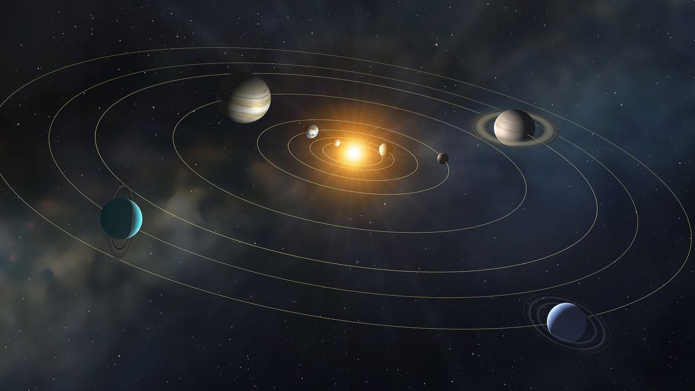
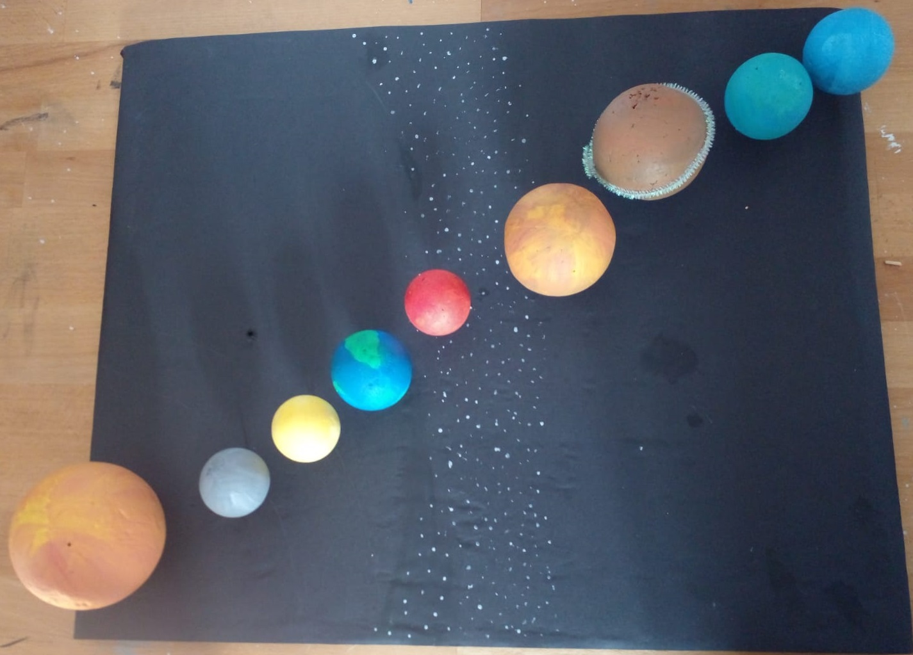

Güneş Sistemi

Güneş sistemi 8 gezegen ve Güneşten oluşur. Bu gezegenler Güneşe uzaklık sırasına göre :Merkür , Venüs, Dünya ,Mars, Jüpiter, Satürn, Uranüs
Neptün diye sıralanır.
Maket Yapılışı
Güneş sistemi maketenizi oluştururken takip edeceğiniz adımlar:
- 1- En büyük strafor köpüğü alın ve sarıya boyayın. Bu güneşiniz oldu. Güneşi mukkava zemininiz en başına yapıştırın.
- 2- Güneşe en yakın ve en küçük gezegen Merkür. Merkür Güneş etrafındaki turunu en hızlı tamamlayan gezegendir. Güneşe en yakın olmasına rağmen en sıcak gezegen değildir. Merkür için beyaz ve siyah renklerini karıştıp gri rengini elde ettikten sonra en küçük strafor köpüğü alın ve boyayın. Bu da güneşe en yakın gezegen olan Merkür'ü elde etmenizi sağladı.Bunuda Güneşin yanına yapıştırın.
- 3. Sıradaki gezegen Venüs , en sıcak gezegendir ve rengi içinse sarı-turuncu renklerini karıştırmalıyız. Merkürde kullandığımız strafor topunun aynısını kullanarak boyayıp Merkür un yanına yapıştırın.
- 4. sırada üzerinde yaşadığımız Dünya. İlk maviye boyayıp ardından üstüne yeşilden karalar yapabilirsiniz. Orta büyüklükte bir strafor topu iyi bir seçim olur. Dünyayıda Venüs'ün yanına yapıştırın.
- 5-Mars kızıl gezsgen olarak bilinir. Bu yüzden kırmızı ve turuncuyu karıştırıp boyayabilirisniz. Dünyadan daha küçüktür. Orta boy strafor köpüğü tercih edelim. Boyadıktan sonrada Dünya nin yanina yapıştıralım.
- 6-Jüpiter gazdan oluşan bir gezegendir. Bir kaç rengi var ama biz beyaz ve turuncuyu karıştırıp Jüpiterin rengine yakın bir reng elde edebiliriz. Büyük yada orta boy strafordan kullanıp boyadıktan sonra Marsın yanına yapıştırın.
- 7-Satürn bu gezegende gazdan oluşur. Buz ve kaya parçalarından oluşan bir halkası vardır. Güneş sistemindeki halkalı tek gezegendir. Satürnü için ise büyük yada orta boy straforu kahverengiye boyayabilirizsiniz. Boyadıktan sonra ise Jüpiterin yanına yapıştırın.
- 8-Uranüs Güneş sisteminin en soğuk gezegenidir.Gazdan oluşur.Uranüs için beyaz ve maviyi karıştırabilir yada açık mavi kullanabiliriz. Yine büyük yada orta boy starfor köpüğü tercih edebiliriz. Ve boyayıp Satürnün yanına yapıştırın.
- 9-Son olarak Neptün. Güneş sistemindeki son gezegendir. Uranüs e çok benzer. Gazdab oluşur. Uranüs için mavi ve yeşil renklerini karıştırabiliriz. Orta yada büyük boy straforu boyayıp Uranüsün yanına yapıştırın.
- 
- Ve Güneş sistemi maketinizi bitirdiniz.
Bilgi Kutucuğu:2006 dan önce 9. Gezegen sayılan Plüton 2006da gezegenlikten çıkarıldı. Sebebi ise Plüton kütle çekimi etkisi ile yörüngesi etrafındaki diğer gök cisimlerini kendisine bağlayamadığı için gezegen değil, cüce gezegen olarak sınıflandırıldı.